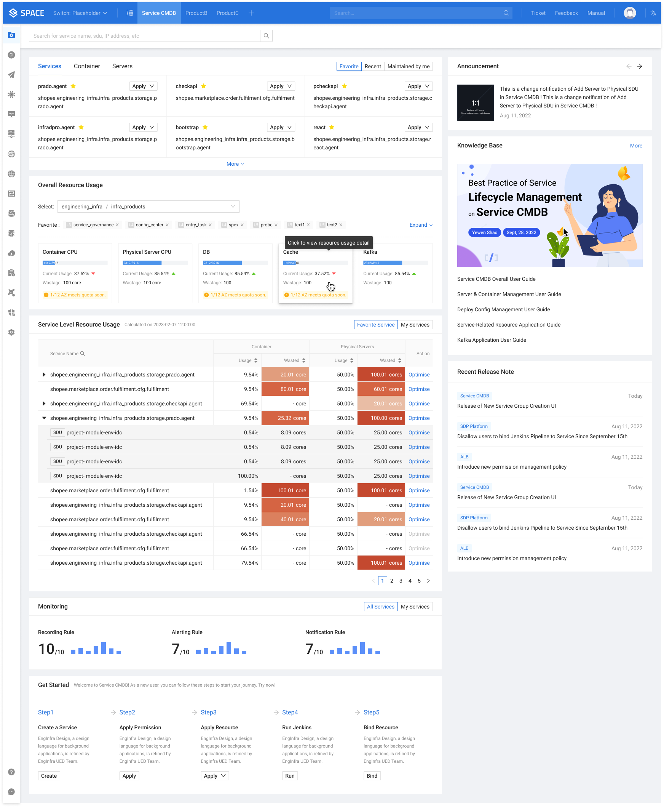
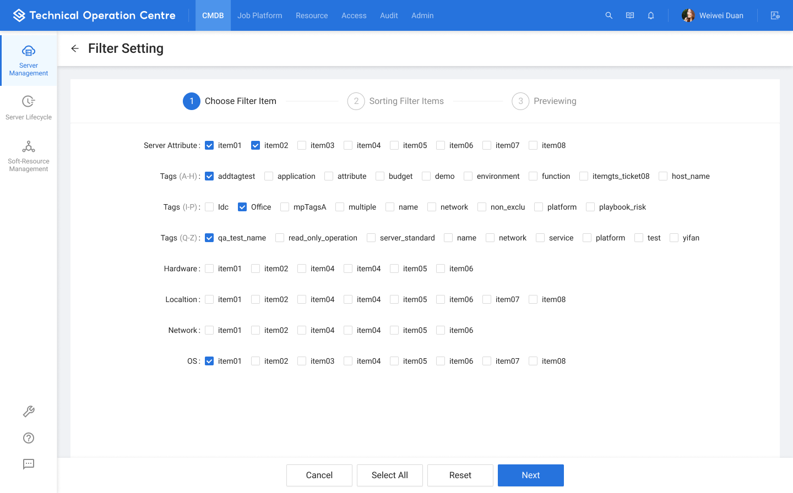
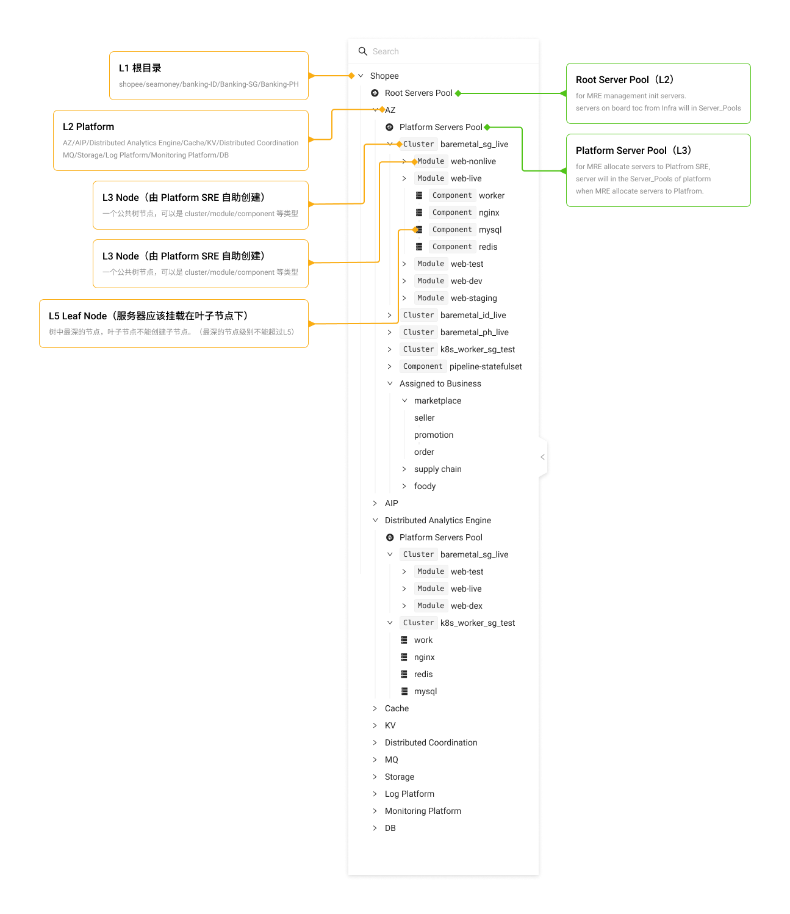

01 / First, the whole engineering world
First, the whole engineering world — then two specific problems
This article uses two typical products — Service CMDB and Server CMDB — to show how I understand a business, organize its pages, and hand my judgment to the team. Several kinds of people work on the platform at once: developers focus on their services, business SREs keep the servers running, and platform SREs provide the underlying resources and capabilities. The same platform is a different world for each role.
Blue ↗ expands the design case Gray other platform products
Application Management
service ownership, delivery, and configuration
Application Traffic
access, routing, discovery, and interconnection
Resource
compute, data, and middleware support
ComputeDatabaseNetwork
addressing, devices, policy, and connectivity
AI Infra
agent runtime and related base capabilities
Observability
observing operations, investigating incidents
Governance & Workflow
identity, access, and operation flows
Infra Process
disaster recovery, resource planning, and capacity
Server & AZ
servers, jobs, and regional context
How I understood this system from zero is in the essay 'Order on the page.' I won't repeat it here — let's go straight to two concrete problems on the platform.
02 / Multi-layer structure, and room to give back
Service CMDB: untangling a multi-layer structure and leaving room to breathe
The page's worst fear isn't running out of space — it's getting lost
The more permissions you have, the more complex the service tree. A developer may own many services across several sub-teams; open any one, and containers, physical servers, network, and caches hang off it. Switch away and back, and you still need to know where you are.
So I separated the entry points: navigation handles moving between products, the service tree handles locating, the header holds who the service belongs to, and the resource tabs expand what hangs off this service. Distinguish what's always visible from what expands on demand, and the page stays clear.
You also have to carve out space. Navigation can be called up anytime; scrolling down, the header collapses secondary info, keeping the service name and resource entry points; when content needs more width, the service tree can collapse while its entry point stays. Resource tabs let users pick and arrange them — everyone watches different things, so the frequently used ones should come first.
One page, four working states
Full structure
Navigation, service tree, service identity, and resource tabs each doing their job.

Navigation called up on demand
The entry point for cross-feature switching is still there.
Header collapsed
Reading down, the service name and resource entry points stay.
Service tree collapsed
Horizontal space goes to content; the entry point stays.


The overview gives judgment; the detail gives evidence
The resource overview starts with overall usage, then breaks down into services and deployment units. Frequently used, recently used, and ones you maintain each have their own entry point: enter from the familiar, or trace back from resource status to the service you need to watch — either works.

Entering a specific service, container resources separate current usage, deployed, quota, and recent peak, then break down to sub-services; physical servers keep count, type, usage, and cost change. The two resource pages follow the same reading order — overview, then breakdown, then detail — but each keeps its own metrics, never forced. One utilization rate can't explain all resources; the interface has to give people a way to keep checking.
Two resources, one reading order
Container resources
Current usage, deployed, quota, and recent peak, separated, then broken down to sub-services.

Physical servers
Count, type, usage, and cost change.

03 / Professional queries, and your own habits
Server CMDB: queries professional enough, and usable your way
Picking only a field is like leaving a sentence unfinished
In TOC, SREs hold a huge number of servers. Finding a machine may start from IP, hostname, cluster, region, status, or tag. In one condition, field, operator, and value must come together to be complete — picking only a field is like leaving a sentence unfinished.
So I kept common conditions, and also left a way to add temporary ones: for the lookup in front of you, one more condition is enough — you don't need every field sitting on the page all year.
And everyone's usual clues are different. The custom form is split into three steps: choose fields, arrange order, preview. Adding a temporary condition handles this query; configuring a common form handles every future one. The two actions don't mix: Add Filter supplements the current query; Filter Setting defines your own common form.




Finding the machine is only the start
The server tree gives the scope, the query narrows the set, and the list lays out name, address, tags, ownership, and status. Into the detail, basic properties, tags, system, location, and ownership are separated out — and you can keep drilling down.

Single-machine actions sit close by, in the row; more expand by category. Select several, and the bottom shows what's selected and what you can do. Find, look, do — connected in one context — so the user always knows which batch is in hand.
From single-machine detail to batch operations
Single-machine detail
Check basic properties, tags, system, location, and ownership.
Nearby actions
More actions expand by category.

Batch operations
The bottom shows the selected count and batch actions.

04 / Each product, one problem
Specific design across more products
This work isn't only in the two CMDBs. Products in network, compute, observability, and resource delivery each have their own page problems. Below is a rough selection from different products — not aiming for the most representative screen of each, just choosing ones that don't repeat. Switch by product name.
Representative design from more products
Log Platform
Established the design foundation, guided later design, and owned quality.

SRS · resource delivery
Progress, stages, and tasks in a delivery project.

IPAM · address management
Adding a subnet pool: check adds, keeps, and deletes before submitting.

Pingmesh · network probing
From network topology into connection status.

VPC · network resources
A subnet pool's address range and associated config, in one creation flow.

EIP · elastic IP
Check the associated object before submitting.

Config Center
In a release request, make the change and its scope clear.

Network Alert
In alert history, review occurrences and recoveries.

05 / Judgment becomes design foundation
A foundation others can build on
The trade-offs in the two CMDBs, plus the judgment in other products, gradually accumulated into design rationale, business components, and page structure — reused by later projects. How the team took these over is in the essay 'Collaboration by stage.' Here, one line:
Whether a design foundation is solid shows when new requests come in: can the team read the choices already made, and keep building with a rationale.
Some files reference internal company information; they can be discussed in an interview with sanitized material.